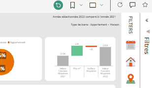
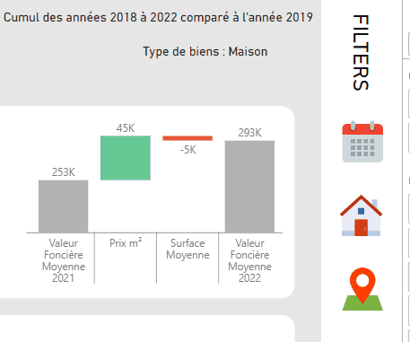

La lecture suit la logique habituelle, de gauche à droite
et de haut en bas, pour une compréhension naturelle.
Commençons par quelque chose de simple et percutant : un
graphique linéaire. Il répond à la question fondamentale
de toute entreprise : "Est-ce que ça monte ou ça descend
?"
Ici nous observons une nette diminution des transactions
alors que le prix au m² continue d'augmenter.
Ensuite, nous avons le camembert. Personnellement, je ne
suis pas le plus grand fan de camembert d'un point de vue
visuel, mais dans ce type de rapport, il prend tout son
sens. Il ne sert pas seulement de représentation
graphique, il est aussi un moyen de filtrer et segmenter
les données en toute simplicité, en plus de donner un
aperçu de leur importance.
Maintenant, parlons du bridge. C'est là que ça devient
vraiment intéressant. Le bridge permet d'expliquer les
variations entre deux instances de données.
Habituellement, on le trouve entre deux périodes, mais
vous pouvez imaginer l'utiliser pour comparer deux zones
géographiques différentes, par exemple.
Ici on explique comment la valeur foncière moyenne des
biens vendus en france a évolué entre 2021 et 2022. Les
acheteurs ont payé 22 000€ de plus parce que les
prix au m² ont augmenté et pour contrebalancer ont
concédé à l'équivalent de 3000 € de surface.
Plus d'infos sur l'analyse
factorielle
Jetons un œil aux icônes du bandeau de filtres à droite,
qui vous permettent de définir les principales dimensions
:
- Le temps : que ce soit l'actuel ou en comparaison
- Les caractéristiques du bien
- La zone géographique
Dans le monde de PowerBI, nous avons un petit jeu de
cache-cache avec les filtres. Plutôt que de les disperser
un peu partout sur le rapport, j'ai pris le parti de les
rassembler tous au même endroit, à droite. Pourquoi ? Eh
bien, la réponse se trouve dans la nature même de
l'interface de PowerBI sur le web, qui dispose déjà d'un
volet filtre sur la droite spécifiquement dédié aux
filtres des visuels ou de la page.

Je l'ai fait pour simplifier la vie de nos utilisateurs.
Parfois, il peut être difficile de trouver ces
fonctionnalités, alors que la sélection de filtres par
visuel peut être puissante lorsqu'il s'agit de manipuler
des données. En réalité, de nombreuses requêtes ad hoc
peuvent être résolues grâce à l'utilisation astucieuse de
ces filtres au sein de nos tableaux de bord existants.
En cachant certains filtres, nous parvenons à garder un
aspect épuré tout en offrant une grande variété d'options.
Bien sûr, cela nécessite un peu plus de prudence lors du
développement de futurs rapports, mais cela en vaut la
peine pour éviter de décourager nos utilisateurs, qui
pourraient se retrouver submergés par une multitude
d'options et de paramètres.

Et pour rendre la vie encore plus facile, j'ai ajouté
quelques titres indiquant les filtres sélectionnés. En fin
de compte, si vous pouvez inclure des dates et des
périmètres dans toutes les diapositives, c'est une
excellente pratique. Vous savez, la question la plus
courante lorsqu'on regarde un tableau, c'est : "C'est
quand ?"
En ce qui
concerne la carte, son principal intérêt réside dans son
interactivité. Vous pouvez choisir un indicateur clé de
performance (KPI) et afficher sa valeur ou son évolution.
Il convient de noter qu'un inconvénient majeur de PowerBI
est l'absence de légende pour les visualisations
cartographiques en forme. Heureusement, il existe une
astuce toute simple pour contourner cette limitation :)
Continuons avec le tableau, un élément incontournable,
surtout si votre public est orienté vers le contrôle de
gestion. Sans tableau, votre rapport risque de rester en
jachère, car la culture d'Excel est encore solidement
ancrée, et pour beaucoup, l'idée de ne pas pouvoir manier
les données à leur guise est inconcevable.